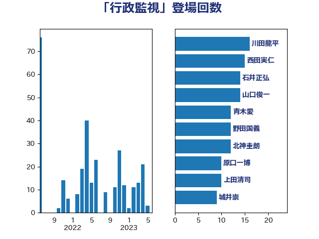

単語「行政監視」

| 川田龍平 | 立憲民主党 | 16 回 |
| 西田実仁 | 公明党 | 15 回 |
| 石井正弘 | 自由民主党 | 14 回 |
| 山口俊一 | 自由民主党 | 14 回 |
| 青木愛 | 立憲民主党 | 12 回 |
| 野田国義 | 立憲民主党 | 12 回 |
| 北神圭朗 | 無所属 | 12 回 |
| 原口一博 | 立憲民主党 | 10 回 |
| 上田清司 | 国民民主党 | 10 回 |
| 城井崇 | 立憲民主党 | 9 回 |
| 江田憲司 | 立憲民主党 | 7 回 |
| 武田良太 | 自由民主党 | 7 回 |
| 吉川沙織 | 立憲民主党 | 7 回 |
| 長浜博行 | 無所属 | 6 回 |
| 細田博之 | 自由民主党 | 6 回 |
| 山東昭子 | 自由民主党 | 6 回 |
| 北村経夫 | 自由民主党 | 6 回 |
| 足立康史 | 日本維新の会 | 5 回 |
| 石田昌宏 | 自由民主党 | 5 回 |
| 玉木雄一郎 | 国民民主党 | 5 回 |
| 高木毅 | 自由民主党 | 4 回 |
| 浜田聡 | NHK党 | 4 回 |
| 山本太郎 | れいわ新選組 | 4 回 |
| 大島九州男 | れいわ新選組 | 4 回 |
| 國重徹 | 公明党 | 4 回 |
| 金子恭之 | 自由民主党 | 3 回 |
| 矢倉克夫 | 公明党 | 3 回 |
| 尾辻秀久 | 無所属 | 3 回 |
| 安江伸夫 | 公明党 | 3 回 |
| 塩川鉄也 | 日本共産党 | 3 回 |
| 古賀之士 | 立憲民主党 | 3 回 |
| 谷田川元 | 立憲民主党 | 2 回 |
| 沢田良 | 日本維新の会 | 2 回 |
| 山本博司 | 公明党 | 2 回 |
| 小沢雅仁 | 立憲民主党 | 2 回 |
| 吉良州司 | 無所属 | 2 回 |
| 吉良よし子 | 日本共産党 | 2 回 |
| 伊藤孝恵 | 国民民主党 | 2 回 |
| 高橋千鶴子 | 日本共産党 | 1 回 |
| 馬淵澄夫 | 立憲民主党 | 1 回 |
| 長谷川英晴 | 自由民主党 | 1 回 |
| 赤嶺政賢 | 日本共産党 | 1 回 |
| 谷合正明 | 公明党 | 1 回 |
| 藤巻健太 | 日本維新の会 | 1 回 |
| 藤岡隆雄 | 立憲民主党 | 1 回 |
| 若松謙維 | 公明党 | 1 回 |
| 米山隆一 | 立憲民主党 | 1 回 |
| 笠井亮 | 日本共産党 | 1 回 |
| 福田昭夫 | 立憲民主党 | 1 回 |
| 石橋通宏 | 立憲民主党 | 1 回 |
| 田村智子 | 日本共産党 | 1 回 |
| 田中英之 | 自由民主党 | 1 回 |
| 梅村聡 | 日本維新の会 | 1 回 |
| 松本尚 | 自由民主党 | 1 回 |
| 末松信介 | 自由民主党 | 1 回 |
| 岡本あき子 | 立憲民主党 | 1 回 |
| 山田賢司 | 自由民主党 | 1 回 |
| 小西洋之 | 立憲民主党 | 1 回 |
| 奥野総一郎 | 立憲民主党 | 1 回 |
| 大野敬太郎 | 自由民主党 | 1 回 |
| 吉川元 | 立憲民主党 | 1 回 |
| 伊藤岳 | 日本共産党 | 1 回 |
| 伊波洋一 | 無所属 | 1 回 |
| 井上哲士 | 日本共産党 | 1 回 |
| 三木圭恵 | 日本維新の会 | 1 回 |